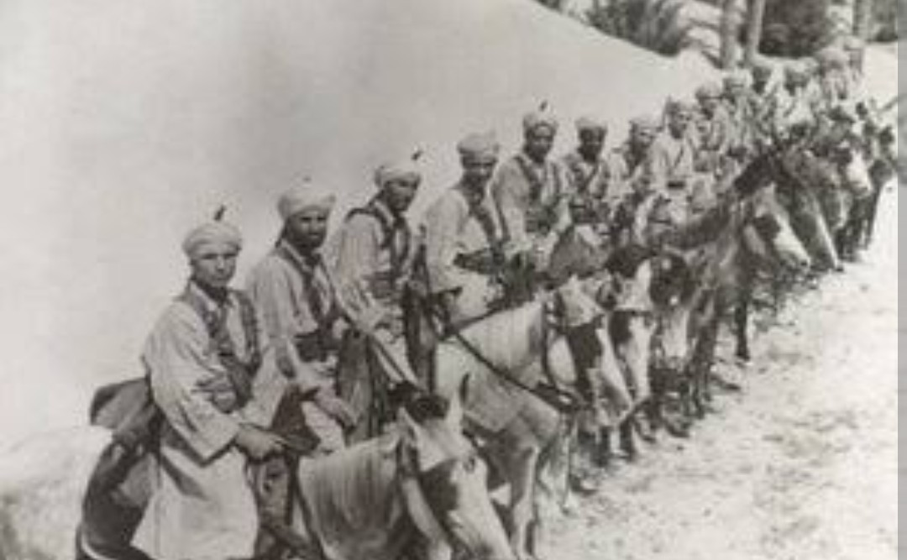
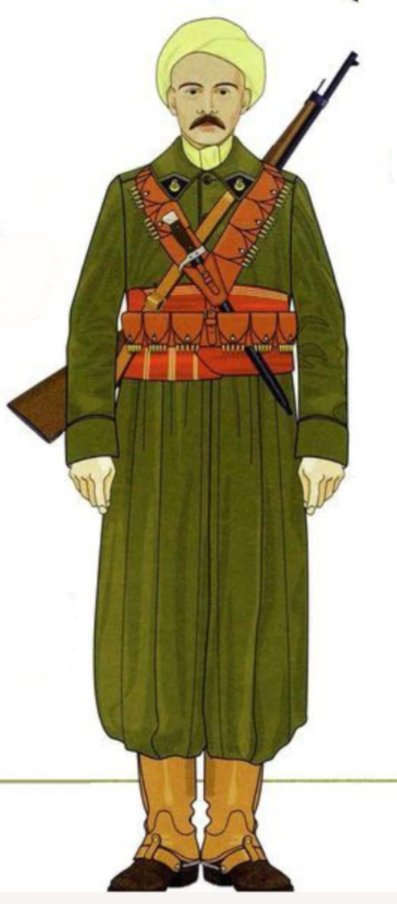

Les Spahis Marocains sont des unités de cavalerie coloniale, célèbres pour leur tenue traditionnelle et leur rôle dans les campagnes de France, d’Afrique du Nord, d’Italie et de Provence. Leur uniforme mélange éléments traditionnels marocains et équipement militaire français.
À l’origine cavaliers montés, ils deviennent progressivement motorisés à partir de 1942, tout en conservant leur identité visuelle unique.

L’armement des Spahis est similaire à celui de l’infanterie coloniale, avec une forte présence du Berthier et du MAS‑36. Les unités motorisées utilisent également des armes automatiques.
Les Spahis adaptent leur tenue selon les climats et les missions :